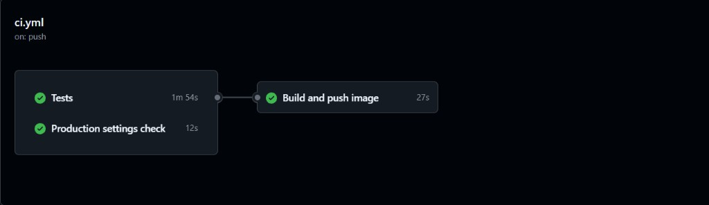
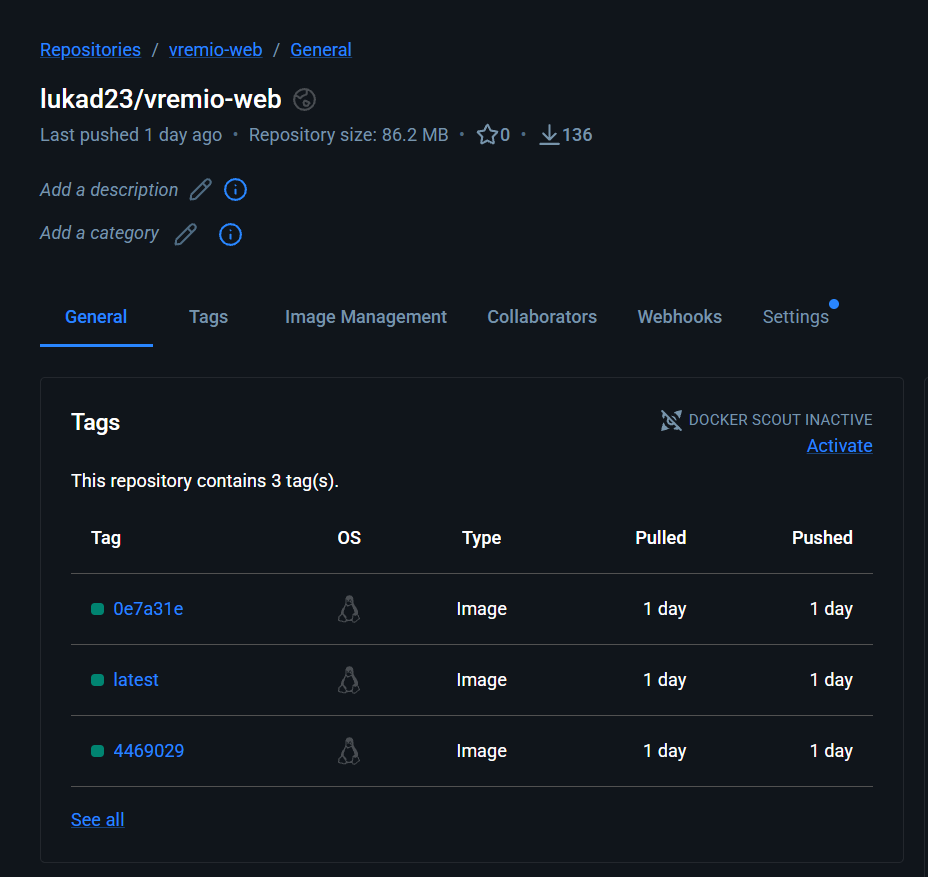

| Предмет | Континуирана интеграција и испорака |
| Наставник | вонр. проф. д-р Панче Рибарски |
| Студент | Лука Дерменџиев |
| Индекс | 233081 |
| Датум | септември 2026 |
Овој елаборат ја опишува проектната задача по предметот Континуирана интеграција и испорака. За основа е земена готова апликација — Vremio, веб систем за онлајн резервации кај салони за убавина (Django шаблони, PostgreSQL). Апликацијата ја изработувам како посебен реален проект, надвор од овој предмет. За КИИИ не се развива нова деловна логика, туку инфраструктурата околу веќе постоечкиот код.
Целта е да се покаже целосен DevOps тек: јавен Git репозиториум, Docker имиџ, оркестрација со Docker Compose, CI pipeline што објавува имиџ на Docker Hub и Kubernetes манифести со демонстрација на локален кластер (minikube). Демонстрацијата користи тест база и dummy конфигурација. Продукциската инстанца на салонот не е дел од овој проект и не се користат нејзините тајни.
Конфигурациите (Dockerfile, Compose, GitHub Actions, Kubernetes YAML) се пишувани за оваа апликација и не се копија од предавања, аудиториски вежби или домашни задачи.
Формата бара најмалку три сервиси, меѓу кои и база. По консултација, демонстрацијата има четири контејнери:
| Сервис | Технологија | Улога |
|---|---|---|
| nginx | nginx 1.27 | Влез од прелистувачот, reverse proxy кон Django |
| web | Django + Gunicorn | Апликацијата (страници, форми, деловна логика) |
| db | PostgreSQL 16 | Перзистентни податоци |
| redis | Redis 7 | Кеш / CACHE_URL (rate limiting) |
Корисничкиот интерфејс е Django templates, не посебен React сервис. Gunicorn ја извршува апликацијата во контејнерот; nginx е влезната врата. PostgreSQL ја чува состојбата. Redis е реален трет/четврти сервис, не празен контејнер.
Кодот е на јавен GitHub репозиториум, одвоен од продукцискиот репозиториум на салонот:
Репозиториум: https://github.com/LukaDermendziev/vremio-ci-cd
Клучни патеки за предметот:
Dockerfile — имиџ на апликацијатаdocker-compose.yml, infra/nginx/default.conf, infra/compose.env.github/workflows/ci.yml — CI/CD pipelineinfra/k8s/ — Kubernetes манифестиinfra/README.md — упатство за Compose и minikube
Апликацијата е спакувана во Docker имиџ базиран на python:3.12-slim-bookworm.
Во текот на build се инсталираат зависностите, се копира Django проектот, се собираат статичките датотеки
и се поставува влезна скрипта. Во runtime, infra/docker/entrypoint.sh прво извршува
migrate, потоа стартува Gunicorn на порта 8000.
Имиџот има health check кон /health/. Овој Dockerfile се користи само за факултетската демонстрација.
FROM python:3.12-slim-bookworm WORKDIR /app COPY backend/requirements.txt /app/requirements.txt RUN pip install -r /app/requirements.txt COPY backend/ /app/ # collectstatic, HEALTHCHECK /health/, ENTRYPOINT gunicorn
Целосниот файл е во коренот на репозиториумот: Dockerfile.
Со docker compose up --build се стартуваат четирите сервиси заедно.
nginx е објавен на http://localhost:8080. Postgres има volume и healthcheck;
web чека базата да биде здрава, nginx чека web да биде здрав.
| Контејнер | Имиџ | Пристап |
|---|---|---|
| vremio-nginx | nginx:1.27-alpine | localhost:8080 → web:8000 |
| vremio-web | се гради од Dockerfile | внатрешен :8000 |
| vremio-postgres | postgres:16-alpine | volume vremio-postgres |
| vremio-redis | redis:7-alpine | CACHE_URL=redis://redis:6379/1 |
Dummy променливите се во infra/compose.env (не се продукциски тајни).
Проверка: http://localhost:8080/health/ враќа ok.
Избрана CI платформа е GitHub Actions. При push на гранката master се извршува работниот тек
.github/workflows/ci.yml со три чекори:
manage.py check, Django тестови.manage.py check --deploy со dummy продукциски поставки.
Регистар: https://hub.docker.com/r/lukad23/vremio-web
Ознаки: lukad23/vremio-web:latest и lukad23/vremio-web:<краток-SHA>.
Најавата кон Docker Hub користи GitHub secrets (DOCKERHUB_USERNAME, DOCKERHUB_TOKEN),
не се чуваат во git. На pull request се гради имиџот, но не се прави push.
Ова го покрива задолжителниот дел: push на git → нова верзија на Docker имиџ на регистар.
Опционален CD кон cloud не е дел од овој елаборат; Kubernetes се демонстрира локално со minikube.


Истите четири сервиси се опишани како Kubernetes објекти во infra/k8s/
и се применуваат со kubectl apply -k infra/k8s во namespace vremio.
Имиџот за web е оној од Docker Hub: lukad23/vremio-web:latest.
| Барање од предметот | Реализација |
|---|---|
| Deployment + ConfigMap / Secret | Deployment за web, nginx, redis. ConfigMap vremio-config (хостови, CACHE_URL). Secret vremio-secret (dummy клуч и лозинка). |
| Service | Стабилни имиња во кластерот: web, nginx, db, redis. |
| Ingress | vremio.local → Service nginx → Django. На Windows со Docker driver пристапот е преку minikube tunnel или NodePort / minikube service. |
| StatefulSet за базата | PostgreSQL како StatefulSet db, headless Service, PVC преку volumeClaimTemplates, PGDATA на волуменот. |
| Namespace + демонстрација | Сè е во vremio. По apply, четирите пода се Running/Ready; /health/ враќа ok. |
Deployment е за безсостојбени компоненти (ако подот падне, се крева нов).
StatefulSet е за Postgres затоа што податоците мора да останат на диск и подотот треба стабилно име.
Init контејнер кај web чека pg_isready на db.
HTTP пробите кон Django праќаат заглавие Host: localhost, за да не паднат на
DisallowedHost (kubelet инаку праќа IP на подотот).
PS C:\Users\User\Desktop\vremio-ci-cd> kubectl get all -n vremio NAME READY STATUS RESTARTS AGE pod/db-0 1/1 Running 0 37h pod/nginx-5455dc89b9-2sx48 1/1 Running 0 36h pod/redis-7dbfb76899-9cmb7 1/1 Running 0 37h pod/web-5d887b47cc-j4mb5 1/1 Running 0 36h NAME TYPE CLUSTER-IP EXTERNAL-IP PORT(S) AGE service/db ClusterIP None <none> 5432/TCP 37h service/nginx NodePort 10.103.224.111 <none> 80:30080/TCP 37h service/redis ClusterIP 10.104.148.58 <none> 6379/TCP 37h service/web ClusterIP 10.105.164.100 <none> 8000/TCP 37h NAME READY UP-TO-DATE AVAILABLE AGE deployment.apps/nginx 1/1 1 1 37h deployment.apps/redis 1/1 1 1 37h deployment.apps/web 1/1 1 1 37h NAME READY AGE statefulset.apps/db 1/1 37h
cd vremio-ci-cd docker compose up --build # http://localhost:8080 # http://localhost:8080/health/
minikube start --driver=docker minikube addons enable ingress kubectl apply -k infra/k8s kubectl -n vremio get pods minikube service nginx -n vremio
За Ingress URL http://vremio.local е потребен minikube tunnel и запис во hosts.
Тоа не е задолжително за да се види дека апликацијата работи: NodePort / minikube service е доволен пристап на Windows.
| Ресурс | Линк |
|---|---|
| Јавен код | github.com/LukaDermendziev/vremio-ci-cd |
| CI работни текови | github.com/LukaDermendziev/vremio-ci-cd/actions |
| Docker имиџ | hub.docker.com/r/lukad23/vremio-web |
| Compose / K8s упатство | infra/README.md во репозиториумот |
Алатки: Git, GitHub, GitHub Actions, Docker, Docker Compose, Docker Hub, nginx, Kubernetes, kubectl, minikube, Django, Gunicorn, PostgreSQL, Redis.
Проектот ја исполнува спецификацијата на предметната задача врз готова апликација со база: јавен git, Docker имиџ, Compose со четири сервиси, CI што објавува имиџ на Docker Hub, и Kubernetes манифести (Deployment, Service, Ingress, StatefulSet, ConfigMap/Secret) во посебен namespace, покажани на minikube. Истиот Docker Hub имиџ што го гради pipeline-от се влече во кластерот. Продукцискиот салон останува одвоен од оваа демонстрација.